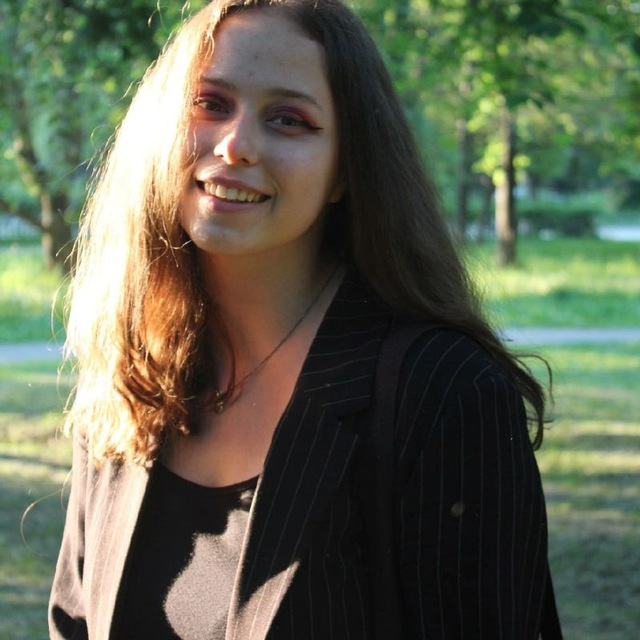

Я являюсь студенткой 1 курса кмб-1-2024.
Имя: [Пыхова Анна Александровна]
Профессия: Художница-портретистка
Специализация: Графика (уголь, карандаш), живопись (масло, гуашь)
Образование:
Художественная школа имени Широкова г.Перми
Краевой центр «Росток»
Российская академия живописи, ваяния и зодчества Ильи Глазунова г.Перми(вечернее отделение кафедры живописи)
Опыт:
Участие в международных соревнованиях по пленэрной живописи.
Участница Дельфийских игр в направлении «Живопись».
Прохождение сессий и практик в различных городах.
Контакты:
Телефон: [79824690074]
Email: [a-pyh@mail.ru]
Instagram: [@pkhv_aa]
Мои работы будут представлены на следующей странице